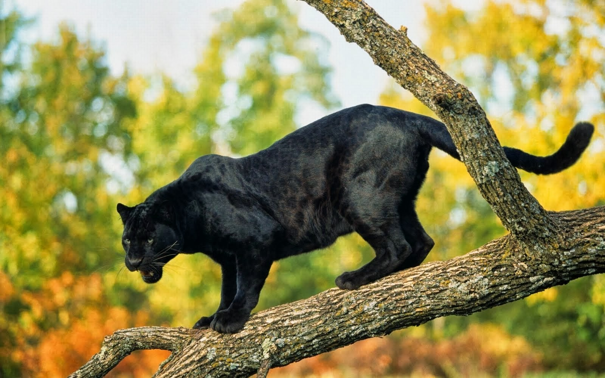
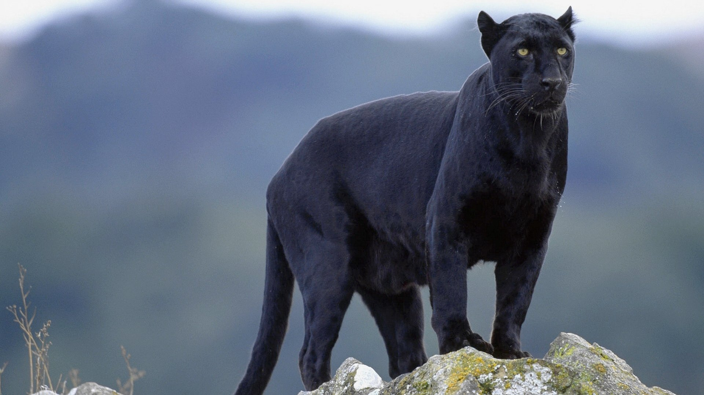
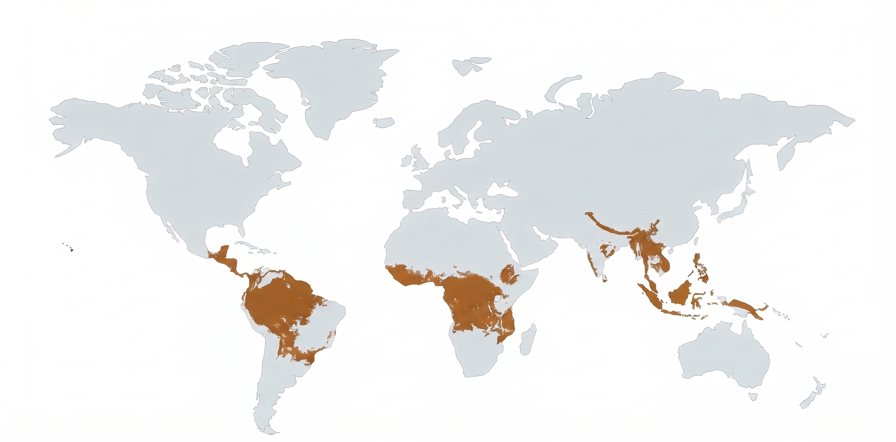

Pantera Negra
Panthera pardus
A pantera-negra não é uma espécie distinta de felino, mas sim uma variação genética de coloração escura — conhecida como melanismo — que ocorre principalmente em leopardos (Panthera pardus) e jaguares (Panthera onca). Sob a sua impressionante pelagem de um negro profundo e lustroso, continuam a esconder-se as habituais rosetas e manchas características da espécie, que se tornam visíveis sob a luz direta do sol. Dotada de uma musculatura poderosa, garras retráteis e sentidos altamente apurados, este magnífico predador alia uma agilidade extraordinária nas árvores a uma força física formidável, sendo um dos caçadores mais furtivos e eficientes do reino animal.
Habitat Natural

A pantera-negra habita preferencialmente florestas tropicais densas, zonas de selva fechada, bosques húmidos e regiões montanhosas arborizadas, com particular incidência na África Subsariana e nas florestas tropicais da América Central e do Sul. A coloração escura confere-lhe uma vantagem evolutiva significativa em ambientes de vegetação densa e sombra profunda, permitindo-lhe camuflar-se na perfeição enquanto espreita as presas. São animais solitários e extremamente territoriais, que passam grande parte do dia descansando discretamente entre a ramagem alta das árvores ou em abrigos rochosos.
Dieta
A pantera-negra é um carnívoro estrito e um predador de topo com hábitos essencialmente crepusculares e noturnos. A sua alimentação é altamente variada, incluindo antílopes de médio porte, veados, javalis, macacos e pequenos mamíferos. Graças à sua enorme força física, é capaz de caçar presas que pesam tanto ou mais do que ela própria, arrastando frequentemente as suas carcaças para o alto das árvores para as proteger de outros predadores concorrentes, como hienas ou leões.
Curiosidades
- O melanismo que origina a cor negra da pelagem é uma caraterística genética recessiva; no entanto, duas panteras negras podem ocasionalmente ter crias com o padrão normal de manchas.
- Possuem uma visão noturna excecional, sendo capazes de detetar o movimento de uma presa na escuridão quase total graças a uma membrana ocular refletora chamada tapetum lucidum.
- As panteras são felinos excelentes nadadores, não hesitando em atravistar rios caudalosos ou em caçar presas aquáticas quando a oportunidade surge.
As nossas Panteras Negras
No Zoo Jonçela, dois magníficos exemplares de panteras-negras — os irmãos Benjamim e Bujas — fascinam diariamente todos os visitantes pela sua postura elegante e olhar misterioso. Com 6 anos de idade, o Bujas é um macho musculado e imponente que mede cerca de 1,4 metros de corpo (com uma cauda de quase 90 cm) e pesa perto de 70 kg. A Benjamim, com a mesma idade, exibe uma compleição igualmente poderosa e atlética, medindo 1,35 metros e pesando cerca de 65 kg. Ambos partilham um recinto arborizado e enriquecido que simula o seu habitat de floresta densa, onde demonstram toda a sua agilidade, força e curiosidade natural.